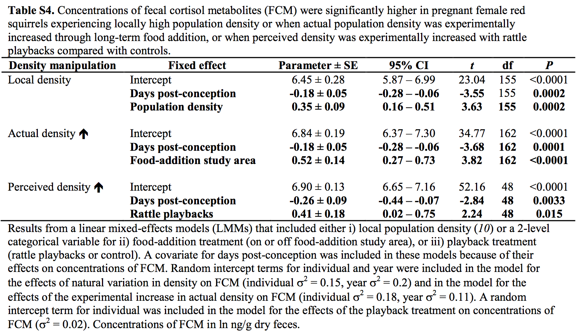

Data from: Density triggers maternal hormones that increase adaptive offspring growth in a wild mammal
Source
Dantzer, B., Newman, A.E., Boonstra, R., Palme, R., Boutin, S., Humphries, M.M. and McAdam, A.G., 2013. Density triggers maternal hormones that increase adaptive offspring growth in a wild mammal. Science, p.1235765.
Background
The study showed that North American red squirrel (Tamiasciurus hudsonicus) mothers from Yukon, Alaska produce faster growing pups in years with increased squirrel density. Remarkably, the researchers even showed that perceived (but not actual) density results in faster growing pups.
Fig. 3/Table S4
Replication
To begin to investigate how squirrel density during pregnancy could control the future growth rate of pups, Dantzer et al measured the relationship between local squirrel density (the variable \(Density\)) and the amount of fecal cortisol metabolites from pregnant mothers (the variable \(FCM\)). Cortisol is a hormone that is secreted as part of stress response. Dantzer et al were interested in cortisol because it is known that, in mammals, blood cortisol levels in pregnant mothers have numerous effects on offspring long past birth. If increased squirrel density causes increased blood cortisol levels, then we would expect to find a positive relationship between \(Density\) and \(FCM\).
Dantzer et al analyzed effect of \(Density\) on \(FCM\) with three different analyses.
\(Density\) as continuous \(X\). Modeled with a linear mixed model. The data are from individual, tagged squirrels from different populations and different years. About 1/2 the data is from experimental populations with supplemented food (peanut butter) to increase density. The model includes days post conception as a covariate and squirrel \(ID\) and \(Year\) are modeled with random intercepts.
Density as levels of \(Treatment\). The two levels are N (control) and Y (supplemental peanut butter). The data are the same as in part 1 so this is not a replication or alternative probing.
Density as perceived density \(Treatment\) with two levels: control (including both no manipulation and chickadee call manipulation) and rattle (rattle sound mimicking neighbor squirrels)
# Dantzer, B., Newman, A.E., Boonstra, R., Palme, R., Boutin, S., Humphries, M.M. and McAdam, A.G., 2013. Density triggers maternal hormones that increase adaptive offspring growth in a wild mammal. Science, p.1235765.
# https://datadryad.org/resource/doi:10.5061/dryad.b3h4q
# data for Fig 3A/Table S4
#
fn <- paste(file_path,'data/2018-04-30-data-from-density-triggers-maternal-hormones-that-increase-adaptive-offspring-growth-in-a-wild-mammal/FCM data dryad.csv',sep='')
fcmA <- data.table(read.table(fn, sep=',', header=TRUE))
# replace labels with more codeable names. Separate to insure match
setnames(fcmA, old=c('Squirrel.ID'), new=c('ID'))
setnames(fcmA, old=c('Year.Sample.Collected'), new=c('Year'))
setnames(fcmA, old=c('FCM.ng.g.dry'), new=c('FCM'))
setnames(fcmA, old=c('Food.Add.Grid'), new=c('Treatment'))
setnames(fcmA, old=c('Raw.Squirrel.Density'), new=c('Density'))
setnames(fcmA, old=c('scaled.days.postconception'), new=c('Days_pc'))
fcmA[,Treatment:=factor(Treatment)]
#lmm - replicates! but weird as uses experimental data in this without Treatment as a variable
fit_A <- lmer(log(FCM) ~ Days_pc + Density + (1|Year) + (1|ID), data=fcmA, na.action="na.exclude")
table_part1 <- coefficients(summary(fit_A))Part II
# categorical model as in Table S4 and Figure 3B - replicates!
# data same as in part 1 but re-analyzed as categorical
fit_B <- lmer(log(FCM) ~ Days_pc + Treatment + (1|Year) + (1|ID), data=fcmA)
table_part2 <- coefficients(summary(fit_B))Part III
#Table S4, figure 3C - replicates
fn <- paste(file_path,'data/2018-04-30-data-from-density-triggers-maternal-hormones-that-increase-adaptive-offspring-growth-in-a-wild-mammal/Table S4 - playback FCM data.csv',sep='')
fcmC <- data.table(read.table(fn, sep=',', header=TRUE))
fcmC[,Treatment:=factor(Treatment)]
setnames(fcmC, old=c('Squirrel.Taglft'), new=c('ID'))
setnames(fcmC, old=c('FCM.ng.g.dry'), new=c('FCM'))
setnames(fcmC, old=c('scaled.days.postconception'), new=c('Days_pc'))
fit_C <- lmer(log(FCM) ~ Days_pc + Treatment + (1|ID), data=fcmC)
table_part3 <- coefficients(summary(fit_C))Figure S3, which is the FCM as a function of treatment level (chickadee vs. rattle) prior to playback
#Supplement page 7 - methods in text, page 11 - Figure S3
fn <- paste(file_path,'data/2018-04-30-data-from-density-triggers-maternal-hormones-that-increase-adaptive-offspring-growth-in-a-wild-mammal/before.playback.fcm.data.csv',sep='')
fcmC_pre <- data.table(read.table(fn, sep=',', header=TRUE))
setnames(fcmC_pre, old=c('Raw.FCM.ng.g.dry'), new=c('FCM'))
setnames(fcmC_pre, old=c('Squirrel.Taglft'), new=c('ID'))
setnames(fcmC_pre, old=c('Days.Post.Conception'), new=c('Days_pc'))
fcmC_pre[,Treatment:=factor(Treatment)]
# model - why interaction here but not elsewhere? Note treatment effect bigger in additive model
fit3 <- lmer(log(FCM) ~ Days_pc*Treatment + (1|ID), data=fcmC_pre)
tableS3_rep <- coefficients(summary(fit3))
# compare to (t97 = -0.93, P = 0.17) from p. 11 of supplement
qplot(x=Treatment, y=log(FCM), data=fcmC_pre) + geom_boxplot() + geom_point()
Replicated results
table_part1## Estimate Std. Error t value
## (Intercept) 6.4524936 0.28003048 23.042112
## Days_pc -0.1824743 0.05137781 -3.551618
## Density 0.3498811 0.09603582 3.643235table_part2## Estimate Std. Error t value
## (Intercept) 6.8382198 0.19668961 34.766553
## Days_pc -0.1853858 0.05039281 -3.678814
## TreatmentY 0.5245187 0.13719083 3.823278table_part3## Estimate Std. Error t value
## (Intercept) 6.9032211 0.13132470 52.566054
## Days_pc -0.2569544 0.09055173 -2.837653
## TreatmentRattle 0.4148583 0.18485323 2.244258
Red flags
Forking paths
There is variation among the analyses. Sometimes \(Days_pc\) includes a quadratic component sometimes not. Some analysis are factorial \(Treatment \times Days_pc\) while others are additive.
Effect of \(Density\) in Table S4 part 1 is robust to forking. Effect of \(Treatment\) is robust to forking.
# part 1
coefficients(summary(lmer(log(FCM) ~ Days_pc + Density + (1|Year) + (1|ID), data=fcmA)))## Estimate Std. Error t value
## (Intercept) 6.4524936 0.28003048 23.042112
## Days_pc -0.1824743 0.05137781 -3.551618
## Density 0.3498811 0.09603582 3.643235coefficients(summary(lmer(log(FCM) ~ Days_pc*Density + (1|Year) + (1|ID), data=fcmA)))## Estimate Std. Error t value
## (Intercept) 6.4691926 0.28212829 22.929968
## Days_pc -0.3660636 0.12851697 -2.848368
## Density 0.3387496 0.09568353 3.540312
## Days_pc:Density 0.1143800 0.07340514 1.558201coefficients(summary(lmer(log(FCM) ~ Days_pc + I(Days_pc^2) + Density + (1|Year) + (1|ID), data=fcmA)))## Estimate Std. Error t value
## (Intercept) 6.5806195 0.29691546 22.163277
## Days_pc -0.1631244 0.05182675 -3.147494
## I(Days_pc^2) -0.1222859 0.05780903 -2.115343
## Density 0.3410313 0.09440687 3.612357# part 2
coefficients(summary(lmer(log(FCM) ~ Days_pc + Treatment + (1|Year) + (1|ID), data=fcmA)))## Estimate Std. Error t value
## (Intercept) 6.8382198 0.19668961 34.766553
## Days_pc -0.1853858 0.05039281 -3.678814
## TreatmentY 0.5245187 0.13719083 3.823278coefficients(summary(lmer(log(FCM) ~ Days_pc*Treatment + (1|Year) + (1|ID), data=fcmA)))## Estimate Std. Error t value
## (Intercept) 6.83811023 0.19863638 34.4252662
## Days_pc -0.20062345 0.06245086 -3.2125009
## TreatmentY 0.52242493 0.13727552 3.8056672
## Days_pc:TreatmentY 0.04539172 0.10849683 0.4183691coefficients(summary(lmer(log(FCM) ~ Days_pc + I(Days_pc^2) + Treatment + (1|Year) + (1|ID), data=fcmA)))## Estimate Std. Error t value
## (Intercept) 6.9486234 0.21740756 31.961278
## Days_pc -0.1673698 0.05102679 -3.280038
## I(Days_pc^2) -0.1111788 0.05669271 -1.961078
## TreatmentY 0.5000358 0.13497025 3.704786Confounding Density and Treatment in Fig 3A,B/Table S4
# residuals from Days_pc
fcmA[, FCM_residuals:=residuals(lm(log(FCM) ~ Days_pc, data=fcmA))]
qplot(x=Density, y=FCM_residuals, color=Treatment, data=fcmA) + geom_point() + geom_smooth(method='lm')
Figure 1: Re-plot of Figure 3A. Data color coded by Treatment level
# residuals from lmm
fcmA[, FCM_p1_residuals:=residuals(fit_A)]
# qplot(x=Density, y=FCM_p1_residuals, color=Treatment, data=fcmA) + geom_point() + geom_smooth(method='lm')Parts 1 and 2 are not independent tests of the hypothesis that density causes increased plasma cortisol, as these are the same data. Worse, \(Treatment\) confounds part 1 and \(Density\) confounds part 2. The effects of this confounding are seen with a simple scatterplot of the \(FCM\) against \(Density\) with points colored by \(Treatment\) and separate regressions fit to each level (Figure 1). If it were simply a density effect, the treated fit should not be elevated relative to the control data.
To unconfound these, instead of two models (parts 1 and 2), both \(Density\) and \(Treatment\) could be combined into the same model. (note: Does this raise colinearity issues? No the correlation is only moderate)
cor(fcmA$Density, as.integer(fcmA$Treatment), use='complete.obs')## [1] 0.5727619fit2 <- lmer(log(FCM) ~ Days_pc + Density + Treatment + (1|Year) + (1|ID), data=fcmA)
tableS4_part1 <- coefficients(summary(fit2))
tableS4_part1## Estimate Std. Error t value
## (Intercept) 6.5597014 0.26168375 25.067286
## Days_pc -0.1805912 0.05107655 -3.535697
## Density 0.2110840 0.11846785 1.781783
## TreatmentY 0.3489617 0.17858010 1.954091Conclusion from the red-flag analysis.
\(Density\) has effect of .21 log(fcm)/squirrel-per-ha, which is 40% smaller effect than in model confounded by Treatment. The effect has a wide error relative to signal. Can this effect account for growth rate variation? \(Treatment\) has a detectable effect but this includes aspects of \(Treatment\) that are independent of \(Density\). This should be rigorously probed in follow-up experiments.
What is effect of ignoring Chickadee manipulation in Fig 3C/Table S4
The data for Figure 3C/Table S4 part 3 has Treatment levels “Control” and “Rattle” but the Control level includes squirrels that were given a Chickadee playback. In fact, very little of the data is control. The coding of which were truly Control and which were Chickadee is in the File for Figure S3, which is the data for FCM for pre-playback squirrels in Chickadee and Rattle treatment levels. I used the tag data to identify the “Controls” in the Table S4 data that were actually “Chickadee”.
red flag #1 ID F3007/F3008 is coded as “Control” in the playback (Table S4) data but as “Rattle” in the pre-playback data (Figure S3)
# combine into single file with three treatment levels (control + chickadee + rattle) and two time levels (before, after)
# note that days_pc is scaled in fcmC but raw in fcmC_pre
fcmC_post <- copy(fcmC)
fcmC_pre[, Days_pc:=scale(Days_pc)]
temp <- match(fcmC_post$ID, fcmC_pre$ID)
fcmC_post[, Treatment_pre:=fcmC_pre[temp, Treatment]]
fcmC_post[, Treatment_pre:=factor(ifelse(is.na(Treatment_pre), as.character(Treatment), as.character(Treatment_pre)), c('Control', 'Chickadee', 'Rattle'))]
# RED FLAG - ID F3007/F3008 is coded as "Control" in the playback data but as "Rattle" in the pre-playback data
fcmC_post[, logFCM_residuals:=residuals(lm(log(FCM)~Days_pc, data=fcmC_post), na.action="na.exclude")]
qplot(x=Treatment_pre, y=logFCM_residuals, data=fcmC_post) + geom_point()
qplot(x=Treatment_pre, y=logFCM_residuals, data=fcmC_post) + geom_point() + geom_point(data=fcmC_post[ID=="F3007"], color='red')
fit3 <- lmer(log(FCM) ~ Days_pc + Treatment_pre + (1|ID), data=fcmC_post)
tableS4_part3_rf <- coefficients(summary(fit3))
tableS4_part3_rf## Estimate Std. Error t value
## (Intercept) 6.3428114 0.26941426 23.542969
## Days_pc -0.2395402 0.08845359 -2.708088
## Treatment_preChickadee 0.8079943 0.30632885 2.637670
## Treatment_preRattle 0.8974583 0.29419927 3.050512Red flag #2 The plot and table show that the effect of playback on \(FCM\) seems to be a manipulation factor and not the type of maniupulation (Chickadee vs. Rattle)
Summary of Figure 3/Table S4
The results for Figure 3A,B/Table S4 parts 1 and 2 are confounded and a re-analysis adjusting for confounding finds that much of the “difference” is due to Treatment effects that are independent of Density. The results for Figure 3C/Table S4 part 3 mask the chickadee treatment level. A re-analysis with this coded as a level indicates that the effect is common for both treatment manipulations and increased FCM is probably due to manipulation rather than “perception of density.”